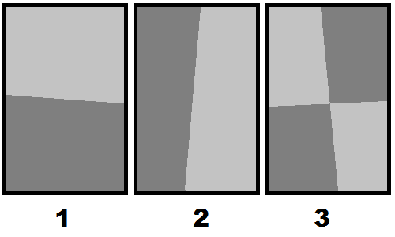
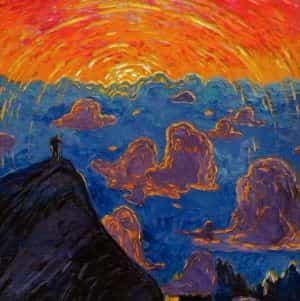

< < < Back
Why Is Modern Art So Uninspiring? – Return Of Kings
As Andy Warhol said, “Art is anything you can get away with.” It’s proverbial that a picture speaks a thousand words. Yet some pictures chatter on without really saying anything. The trends in modern art are causing it to be not very enjoyable. The main problems are that much of it displays little skill, isn’t very uplifting, and sometimes even is ugly.
Pointing out these things might get you lectured about the distinction between modern and contemporary art. However, the usual rejoinder is that if you don’t “understand” it, then you’re just an unsophisticated rube. Actually, there are people academically trained in art history who aren’t taken in.
Granted, individual tastes vary, but I’ve long suspected that the art scene these days is partly a scam. Like so much in cultural matters, quality has taken a back seat to popularity. Much is stylistically lazy. Often you’re left wondering what the hell you’re looking at. By throwing form out the window, it’s missing something vital. A Jackson Pollock style drip painting can convey a mood by the choice of colors and how the paint is tossed, but that’s about it.
Generally it takes about 2000 hours of practice to achieve mastery in something. However, with no standards required, the learning curve can be sidestepped. Little children—and even chimpanzees—have produced pretty decent paintings by modern art standards. Often the critics can’t tell the difference between these efforts and that of “serious” artists who get paid very handsomely.
You can’t blame the kids for not producing something better, since they’re barely learning; or the chimps, lacking the manual dexterity of humans. Really, the laugh is on the art critics who can’t distinguish between mediocrity and mastery.
Tom Wolfe spills the beans
Tom Wolfe, who often has moments of Red Pill brilliance, wrote The Painted Word, poking fun at artists, art critics, and their antics. For example:
What I saw before me was the critic-in-chief of The New York Times saying: In looking at a painting today, “to lack a persuasive theory is to lack something crucial.” I read it again. It didn’t say “something helpful” or “enriching” or even “extremely valuable.” No, the word was crucial.
In short: frankly, these days, without a theory to go with it, I can’t see a painting.
Then and there I experienced a flash known as the Aha! Phenomenon, and the buried life of contemporary art was revealed to me for the first time. The fogs lifted! The clouds passed! The motes, scales, conjunctival bloodshot, and Murine agonies fell away!
Wolfe’s book ruffled some feathers, to say the least. Many reviewers made him out to be a bigger philistine than Goliath. Predictably, they claimed he was too unsophisticated to understand what he was describing. The brutal truth is that the critics actually were the ones with no taste. Remember, they have trouble distinguishing a little kid’s doodling from a masterpiece.
Understandably, the “intelligentsia” threw a hissy fit. The Painted Word threatened to deflate hundreds of very lucrative careers. Both critics and artists worked symbiotically to accumulate great wealth with little effort. If Wolfe’s message had been heeded, art could’ve required more quality and effort to be taken seriously. Also, presumably the museum curators and rich collectors who bought expensive junk would’ve been ashamed to admit they’d been scammed.
Unfortunately, not much changed since Wolfe published it in 1975, and the problem is endemic among all types of cultural gatekeepers. (Need I mention the music industry and the literary scene?) The end result is that crap is celebrated. Woe betide anyone who can paint like Michelangelo but doesn’t want to do trendy stuff!
More from The Painted Word:
In the beginning we got rid of nineteenth-century storybook realism. Then we got rid of representational objects. Then we got rid of the third dimension altogether and got really flat (Abstract Expressionism). Then we got rid of airiness, brushstrokes, most of the paint, and the last viruses of drawing and complicated designs (Hard Edge, Washington Field, Color School)…
Thus, novelty and self-indulgence became the supreme considerations as quality became increasingly unimportant, and painters dropped basic elements one by one with each fad.
This reduction is reminiscent of Aram Saroyan’s memorable 1965 minimalist poem, featuring the word “Light” with the “gh” doubled. That’s not the title; that’s the whole poem, all one word of it. He got $500 from the NEA for that word; a decent chunk of change (adjusted for inflation, it would be about $3800 today). Many people found that a bit silly—including Ronald Reagan—but at least Saroyan didn’t unveil a blank piece of paper and claim it was a poem.
Wolfe goes on though several other artistic fads, finally concluding with Conceptual Art:
And there, at last, it was! No more realism, no more representational objects, no more lines, colors forms, and contours, no more pigments, no more brushstrokes, no more evocations, no more frames, walls, galleries, museums, no more gnawing at the tortured face of the god Flatness, no more audience required, just a “receiver” that may or may not be there at all, no more ego projected, just “the artist”, in the third person, who may be anyone or no one at all, not even existence, for that got lost in the subjunctive mode…
If you suspect that might be an “Emperor’s New Clothes” scam with mediocre artists laughing all the way to the bank, Robert Rauschenberg had a phase where he made paintings with a single color covering the entire picture. One example was just a blank canvas. This was the endpoint that Wolfe was writing about. Truly anyone who can’t see the brilliance of this must be too unsophisticated to understand!
This has its parallel in music too, such as 4’33”, a work in three movements composed by John Cage in 1952. Even if you’re talentless or don’t own a musical instrument, you too can perform this yourself. Just be silent for four minutes and thirty three seconds; that’s the whole “song”. Actually, he wasn’t the first composer to come up with the idea. Hey, at least silence is better than most rap music!
Fame is an agreed-on social frame

In Beau Albrecht’s classic “1”. he contemplates the profoundness of existence. In “2”, with great verve and passion, he symbolizes the rising of workers against capitalist oppression. Unfortunately, “3” is too rococo.
Surely you can do a painting like Robert Rauschenberg’s one-color-everywhere style too—or his blank canvas masterpiece, of course—even without a scintilla of talent. Still, some have given lofty praise and waxed mystically about efforts like this. The difference is you probably won’t make the kind of money Rauschenberg did from that! At some point, you wonder if it’s all a big joke on the public.
Fame is sort of like Social Proof in the dating arena. You’re a hot commodity if other people think you’re hot. Wolfe described what he called the “Boho Dance”. Basically, a would-be successful artist must strike a “to hell with the world” pose where he doesn’t appear to care about fame and success. Once the Bohemian Bourgeois gets discovered, then he can drop the “starving artist” act and bask in the glowing reviews; it’s all easy money from there. It’s the “famous for being famous” concept.
It’s a great racket, though getting discovered is no easy task. Only once some critic sings praises to your brilliance can you make a king’s ransom. This is why you can’t just toss paint onto a canvas and sell it for tens of thousands of dollars, like an original Jackson Pollock would cost. (If you happen to be an art critic, hit me up and we’ll arrange a kickback meeting to discuss my artistic proposals, okay?) As you might suspect, many times Pollock’s style has been imitated and passed off as a long-lost work of his; scientific testing of the materials discovers the fakery that the art critics couldn’t.
Actually, I might flick paint colorfully on my living room floor one day, stripped down to bare concrete. If I get tired of it, I can always put down vinyl planks. Maybe in the distant future, some developer will pull up the flooring to install carpet. After discovering my bright splatters, I will be hailed a great artist the world never knew, and the developer will make a pile of loot from it. That assumes the economic bubble from all this hasn’t burst by then. One day, a voice louder than Wolfe’s might proclaim that the Emperor is naked, toppling the ivory tower.
Why is this popular?

“Remember when we sold my used chewing gum as a minimalist sculpture?”
As we can see, modern art is popular because the “right” people say so, even if the public is unenthusiastic about paying taxes for it or even looking at it. However, there’s more to it than that. First, a little more history.
Things started hitting the skids about a hundred years ago. Art had been getting a little fuzzier with Impressionism and some other forms, which was still pretty good at that point. However, the First World War brought the beginnings of the Dada genre, which is about as weird as it gets: furry spoons, urinal sculptures, etc. Considering the world to have been shattered forever, Dada was light on talent and heavy on shock value. Sometimes the point was to get us to question “What is art?” A century later, that shtick is kind of worn out.
Since then, several other movements came and went, as Wolfe described. We’re right back to shock value again, still beating this dead horse—for instance, “art” (often Federally funded) such as dunking a crucifix into urine, a naked man with a bullwhip coming from where the sun doesn’t shine, or the Blessed Virgin Mary surrounded by smears of elephant poop. All that makes the colorful splotches of the 1960s seem pretty good by comparison.
These days, much alleged art is pretty dreadful. Disregarding all considerations of quality set us way back. How far back? Carvings and cave paintings by Neanderthals and Cro-Magnons were superior to the works of a number of well-paid “artists” today. Sometimes the public questions why stuff meant to offend their morals should be displayed in public. They have an even greater dislike for taxpayer funding of things meant to stick a thumb in their eye. Any suggestion of quality control causes shrieks about censorship from people who don’t understand the difference between the government banning something versus not purchasing it.
The political angle
The Frankfurt School’s Institute for Social Research, the birthplace of cultural Marxism
Now I’ll digress about politics (you knew I would). It’s unsurprising that cultural Marxists prefer art that’s formless, lacking talent, and often even ugly. Taking the “everything is equal” meme as Holy Gospel, they won’t see much difference between paint dribbles and an exquisitely beautiful Renaissance work that took months to create. In fact, they’ll probably say the random splattering is better. They’re good at getting everything completely wrong; fair is foul and foul is fair. I might add that the “chaos is good” meme applies too.
Still, not all leftists are hacks. For example, Socialist Realism was pretty good, especially compared to some of the train wrecks a museum might buy for a king’s ransom. Sometimes the Soviets were more sensible than cultural Marxists. I’m not a fan of Communism, but I’ll certainly give credit where it’s due. An important point is that Socialist Realism actually is art. Someone crapping on stage (this actually happened) is only crap.
Digressing into music a bit, Theodor Adorno—one of the founders of cultural Marxism—had an odd taste that was both highbrow as well as desirous for a clashingly revolutionary style. If he turned up his nose at jazz, I wonder what he’d think about today’s music? One must be careful what one wishes for! His Frankfurt School wanted to turn society upside down. They succeeded beyond their wildest dreams, and popular music reflects the zeitgeist they created. In any event, ugly and jarring art does tend to fit into the cultural Marxist theme of manipulating people to be perpetually discontent, as well as disconnecting us from our cultural heritage.
It’s not just a leftist thing, either. Modern art was promoted by the CIA to show that the USA had a serious art scene. They didn’t want to let the USSR’s Socialist Realism steal the stage. What an odd agency the CIA is, which also promoted Gloria Steinem, and later smuggled cocaine through Mena, Arkansas during the War on Drugs. Did some of the top spooks drop acid left over from their MKULTRA experiments?
What are we to make of it?

This one tells a story, sets a mood, and good use of color too. It even looks like something.
Note that not all modern art is bad. Even if a painting is completely amorphous, perhaps the colors pop or there’s something else stunning about it. There’s a place for experimentation, and if it turns into something brilliant, why not?
Art Deco (which had a small revival in the 1990s) is slightly abstract, but that’s not a problem; its stylistic verve gives it an edge. Kandinsky’s style grew increasingly abstract over his career, but his use of color and geometry makes his art stand out from many of his peers. Antoni Gaudi is top notch. His avoidance of straight lines gives his architecture all a melty look, and it came out excellent. Not very many people have left that much of a lasting, positive mark on their city. Azerbaijan has a great modern art scene—with a colorful and inspiring style—though Baku is certainly far off the beaten path from the usual fine arts circuit.
Other than that, I’ll give greater leeway for sculpture too. Having worked with sheet metal, I know that even putting together a box takes some doing, so fitting odd three-dimensional shapes together requires effort and at least some talent. Likewise does chipping away at stone. You can’t say that much for throwing paint.
One important point is that modern art speaks to the subconscious mind, whereas representative art speaks to us much more directly. Still, there are distinctions of quality to be made, of course. Modern art isn’t something to be feared. Instead, we should applaud the best efforts, and meanwhile let the spotlight shine on folk art too. So there you have it: reward the best, forget the rest.
There’s a theory that, much like cyclical history, art has phases where it becomes increasingly abstract until it can hardly go further, then snaps back to a representative style. I’d say that the art scene has beaten this one to death by now. Perhaps we’ll even reboot to a neoclassical revival. That should drive quality way up, since that style requires considerable talent. I’m one of those philistines who’d like to see more art that’s uplifting and showcases technical skill. Beauty is a nice respite from daily drudgery.
During this turbulent time of change, we’ll have to start setting up parallel institutions, and art can become one of them. Those of us with the time and talent can network and showcase our works online. Taking it to cyberspace, we don’t need cultural gatekeepers to decide what’s worthy to exhibit, or what we’re supposed to think about a painting. Actually, this could be the beginning of something great.
Read more: In Praise Of Painting